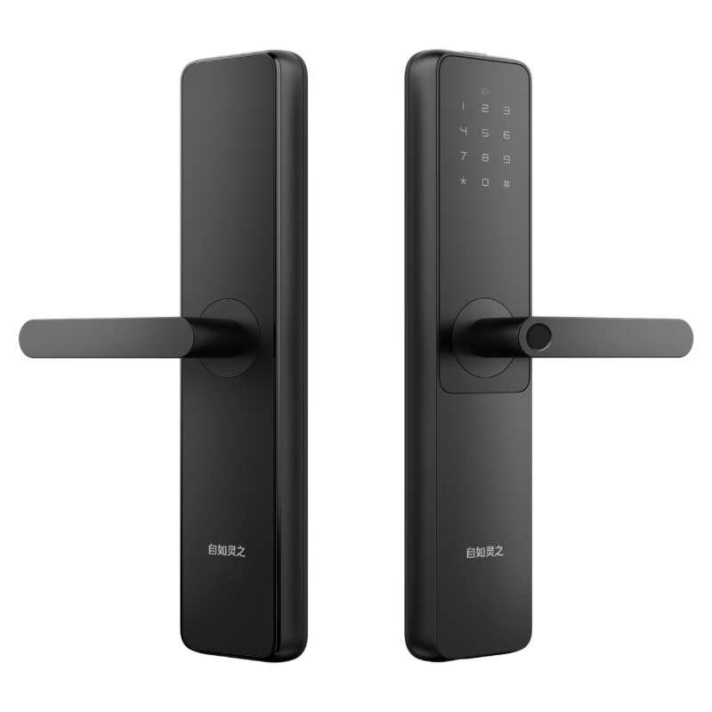
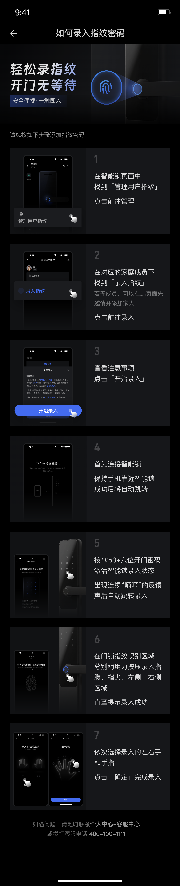

把手上的指纹识别
手指放在把手识别区域，录入成功后即可用指纹开门。
不用每次输入密码
性价比首选
十年百万自如家庭验证，安全质量保障
老锁换新，一步补全“钥匙 + 指纹”。
指纹开门更顺手，密码与机械钥匙也能用。
价格含物料、上门费、拆装费；新换装随附一把机械钥匙。
查看功能参数先核对门体适配与基础安装范围，再确认安装安排。
每天用得上，才是好功能
手指放在把手识别区域，录入成功后即可用指纹开门。
不用每次输入密码在支持的 App 中，按家庭成员录入并标记左右手与手指。
按人管理，更清楚保留密码开门与机械钥匙开门，新换装随附一把机械钥匙。
多一种开门选择指纹录入需使用支持的智能锁管理入口及相应权限；解约后的账号绑定与管理条件，请在换装前确认。
买之前，先看清楚
*#50 + 六位开门密码门厚与开孔尺寸、锁体规格、锁芯等级、电池与应急供电规格、指纹与密码容量，以及 App、网关和账号条件，以本款实际供货版本确认为准。
第一次使用，跟着做
以下按您提供的使用指南整理，实际入口和操作以适配版本的 App 与门锁提示为准。
进入 App 的智能锁页面，找到“管理用户指纹”，点击前往管理。
在对应家庭成员下点击“录入指纹”。如没有成员，可先在该页面邀请并添加家人。
先阅读页面上的录入要求，再点击“开始录入”。
保持手机靠近门锁，等待连接成功后自动进入下一步；连接过程中不要关闭 App。
按照指南，在门锁面板输入 *#50 + 您自己的六位开门密码。听到连续“嘀嘀”反馈声后，等待页面跳转录入。
在把手指纹识别区域稍用力按压，依次覆盖指腹、指尖、左侧和右侧，按提示重复，直到显示录入成功。
选择对应的左手或右手以及具体手指，点击“确定”完成录入。
原指南中的应用界面与客服入口来自原使用环境；当前可用入口、账号权限及服务渠道，请以实际服务方确认为准。
打开高清原图
上传的指南展示了 App 配合门锁录入指纹的流程。解约后的账号权限、门锁绑定关系、可使用的 App 和管理条件，需要在换装前逐项确认。
本款自如业主专享价 ¥768，价格含物料、上门费和拆装费。请先提供门外、门内和门侧照片，确认基础安装范围、门体适配与服务安排。
先检查手机是否靠近门锁、App 是否保持打开，以及是否已按提示激活录入状态。使用同一手指，覆盖指腹、指尖与两侧，跟随页面提示操作；仍无法完成时，请联系实际服务方协助。